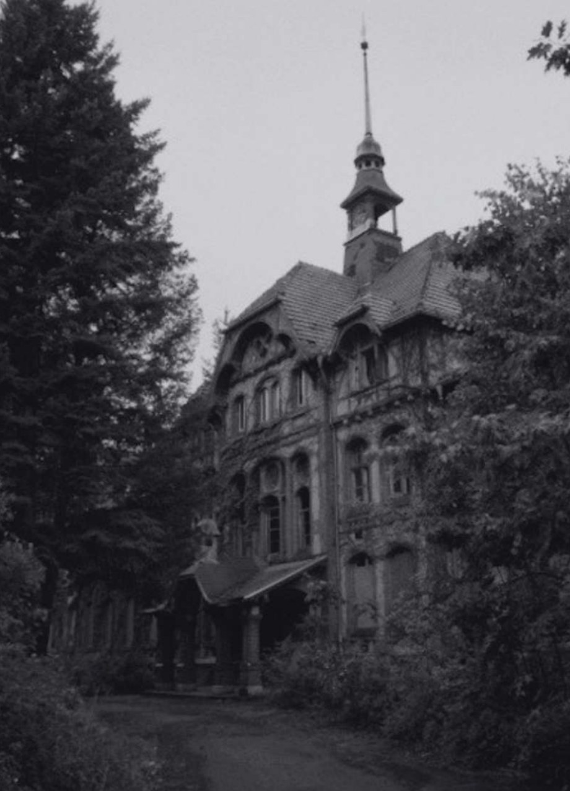
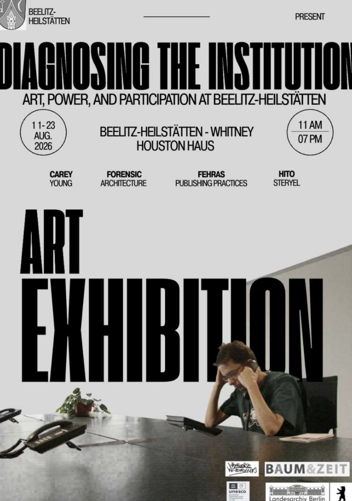

Virtual Exhibition
Diagnosing the Institution: Art, Power, and Participation at Beelitz-Heilstätten
While museums historically function as ideological state apparatuses, institutional critique and participatory practices offer pathways toward a more dialogic and socially accountable model of cultural production.
Can art operate as a form of argument, shaping not only what we see but also how we think and act? This exhibition proposal contends that museums are not passive storehouses of culture, but active sites of power, negotiation, and possibility.

Exhibition Proposal
Can art function as a form of argument, not merely illustrating ideas, but detonating them? This exhibition is built on the conviction that museums are not neutral sanctuaries of culture; rather, they are charged sites where knowledge is manufactured, authority is legitimized, and ideology quietly reproduces itself. Rather than treating artworks as inert objects behind glass, this project positions them as live propositions—urgent, embodied arguments about power, visibility, memory, and the radical possibilities of participation.
Located approximately an hour train ride outside of the city of Berlin, Germany, lies the haunting ruins of Beelitz-Heilstätten, a vast, crumbling sanatorium encompassing around 60 complexes. This site-specific exhibition, located in the Whitney-Houston Haus, transforms a space of historical confinement into a living, critical framework. Peeling plaster, overgrown courtyards, and corridors that once carried the weight of suffering become the exhibition’s first and most powerful argument.
Originally constructed between 1898 and 1930 as a tuberculosis sanatorium, Beelitz-Heilstätten was a monument to modernist faith in hygiene, visibility, and spatial order. Over the course of the twentieth century, the site was conscripted by successive regimes; a military hospital in both World Wars, then a Soviet administrative facility during the Cold War. Ideologies came and went; the architecture endured.


PDF · 67 pages · opens in a new tab